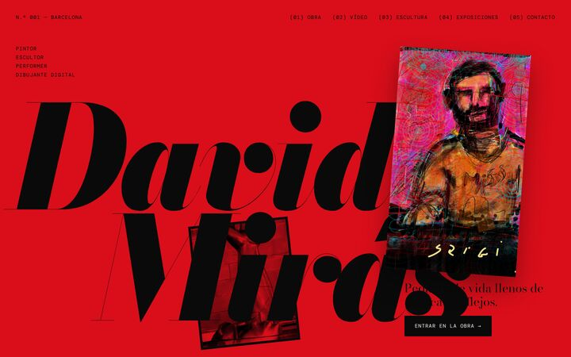
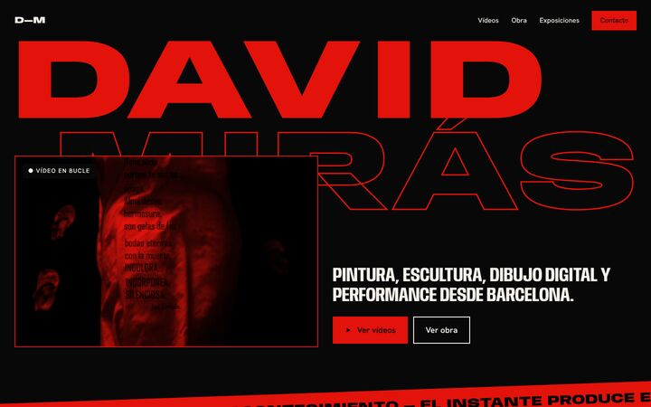
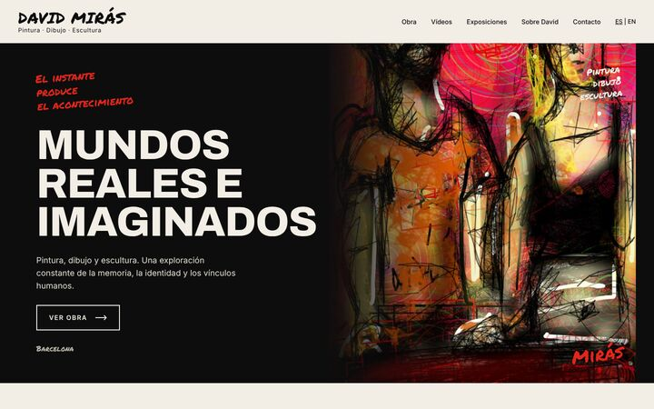
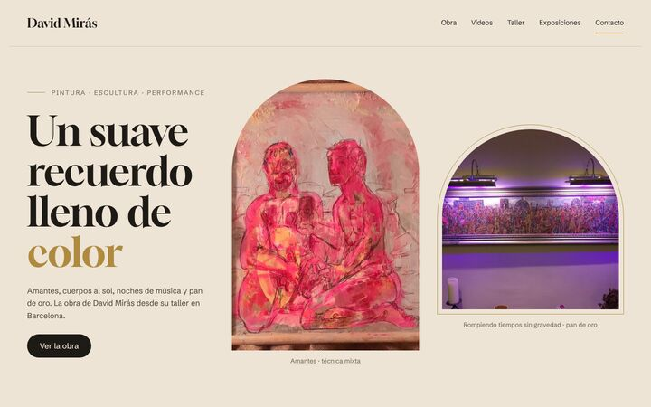
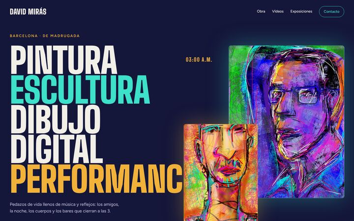
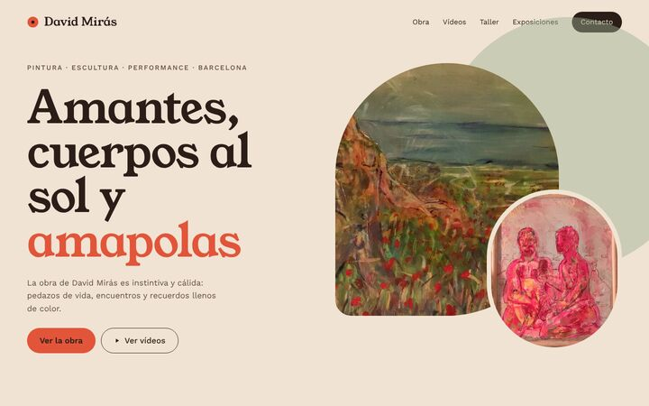
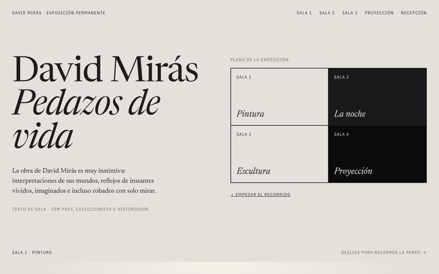
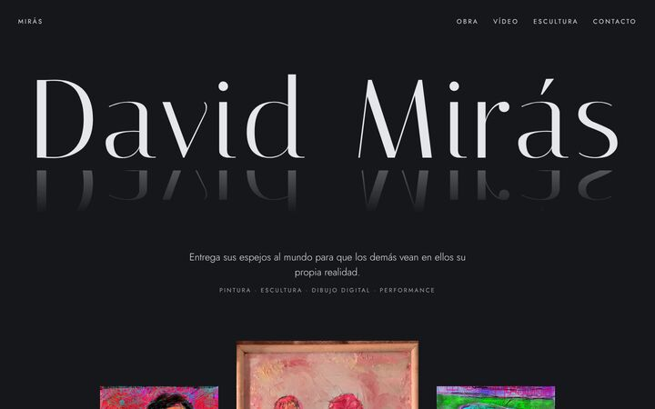

Tu nueva web, David
Aquí tienes ocho propuestas de diseño para tu web, todas con tus obras. Navégalas con calma, compáralas y dime cuál te gusta más. También puedes quedarte con partes de varias.
- 1. Abre cada propuesta con las pestañas de arriba
- 2. Baja hasta el final para verla entera
- 3. Dime cuál eliges

Propuesta A Manifiesto rojo Rojo intenso y un gran titular de cartel. Impacto máximo desde el primer segundo. Ver propuesta →
Propuesta B Noche roja Fondo negro, letras gigantes y el vídeo como protagonista de la portada. Ver propuesta →
Propuesta C Memoria viva Negro, crema y rojo con letra escrita a mano. Basada en la primera propuesta. Ver propuesta →
Propuesta D Cal y oro Tonos cálidos de cal y dorado, con aire de galería serena y elegante. Ver propuesta →
Propuesta E Madrugada Azul de noche y colores neón: el ambiente de la música y la fiesta. Ver propuesta →
Propuesta F Amapola Tonos tierra y coral, formas suaves y una sensación cercana y luminosa. Ver propuesta →
Propuesta G La sala La web se recorre como una exposición, sala por sala. Ver propuesta →
Propuesta H Espejos Negro elegante y reflejos: las obras como espejos para quien las mira. Ver propuesta →